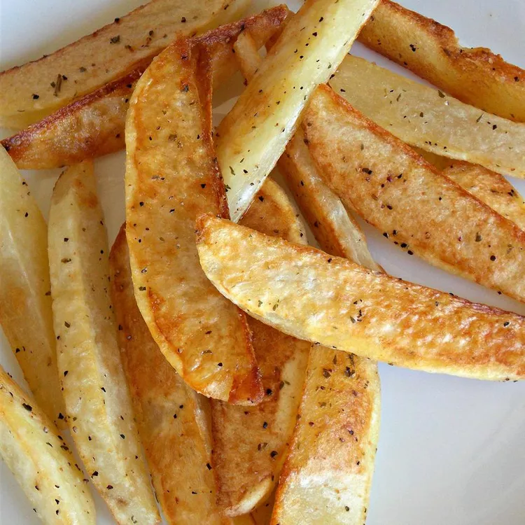

Home
Oven-Baked Potato Fries
These potato fries are a great way to get kids started on learning how to cook. We used this for our "at-home" camp week. We taught the kids how to cook one new recipe each day for an entire week.

Ingredients
- 2 pounds baking potatoes, each cut into six wedges
- 2 tablespoons olive oil
- ½ teaspoon dried thyme leaves
- ¼ teaspoon ground black pepper
- salt to taste
- ¼ cup shredded Cheddar cheese (Optional)
Steps
- Gather all ingredients. Preheat the oven to 450 degrees F (230 degrees C).
- Arrange potato wedges on a baking sheet; drizzle with olive oil and season with thyme, pepper, and salt. Toss wedges with a spatula to coat evenly.
- Roast potato wedges in the preheated oven for 15 minutes; flip and continue roasting until soft in the center, about 15 minutes more.
- Transfer wedges to a platter and sprinkle with cheese.